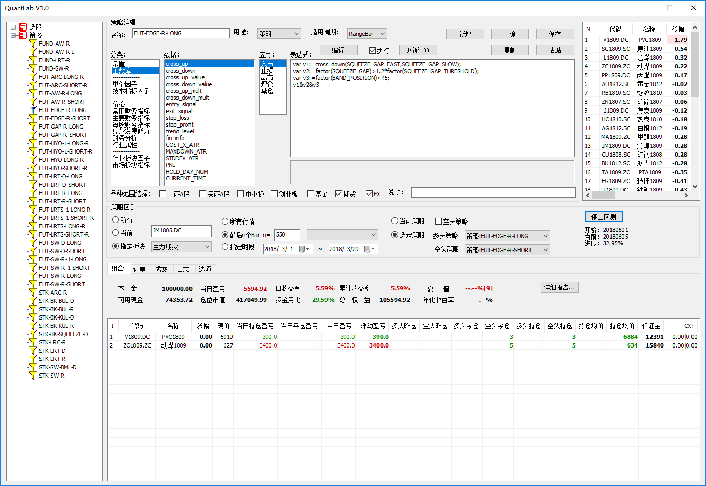

快速上手¶
QuantLab程序的主界面如下图所示：
开发策略的第一步就编写策略，每个策略又分为，五个部分，分别是：入市、止损或止盈、离市、增仓和减仓。 每个部分是一个表达式，下面举例如下：
入市表达式：:: cross_up(MA_FAST, MA_SLOW)
止损和止盈表达式：:: COST_X_ATR > 3 or MAXDOWN_ATR > 0.6
离市表达式：:: cross_down(MA_FAST, MA_SLOW)
增仓和减仓可以不用设置。
上述表达式中，cross_up、cross_down是函数，MA_FAST、MA_SLOW、COST_X_ATR、MAXDOWN_ATR是技术指标和 因子，具体参考技术指标、财务数据等章节。
第二步，设定交易标的的范围。
可选范围：上证A股、深证A股、中小板、创业板、基金、期货、EX（其他市场，如港股等）
第三步，设定交易行情的周期频率。
周期频率可选：5分钟、15分钟、30分钟、日、周、月等。
经过这样三个简单步骤，这样一个简单的策略就编写好了，然后就可以做回溯测试，看策略在历史数据上的运行效果。